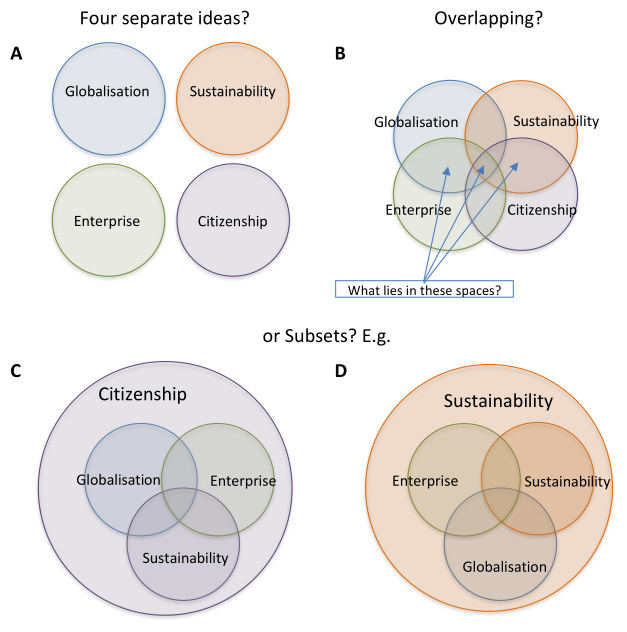
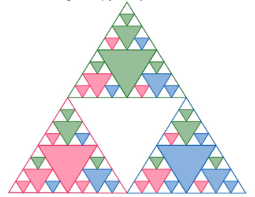
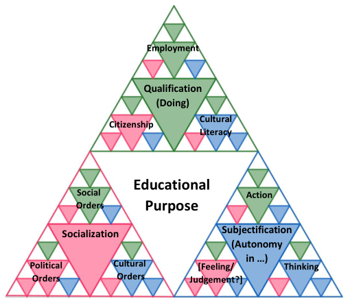
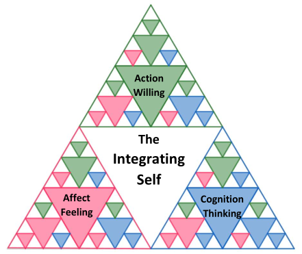
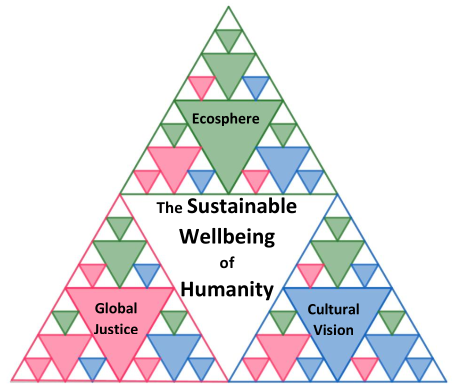
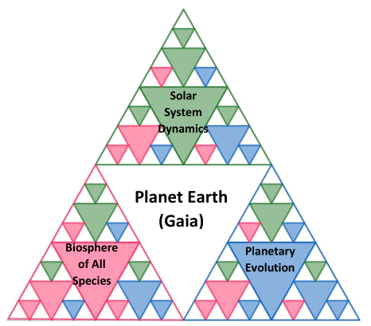

2.6 The Theoretical Basis for an SWM Framework
| ⬅️ | ➡️ |
|---|
Sections:
2.6 The Theoretical Basis for an SWM Framework
- 2.6.1 Section overview
- 2.6.2 Toward a complexity model of curriculum
-
2.6.3 A Triadic Sierpinski Fractal Form for an SWM Framework
- 2.6.3.1 Sustainable Wellbeing as the Attractor organising the SWM framework
- 2.6.3.2 The SWM framework Individual-Interpersonal level
- 2.6.3.3 The SWM framework on the Human-Societal level
- 2.6.3.4 The SWM framework on the Planetary level
- 2.6.3.5 Advantages of a TSF for Sustainable Wellbeing
- 2.6.3.6 Limitations of the TSF ‘Model’
- 2.6.4 Co-constructing the SWM framework
2.6.1 Section overview
This section brings together the themes of the previous three sections which have argued that Sustainable Wellbeing must urgently become the central focus of the secondary school curriculum and that this will require a transformative reorientation of education based on complex adaptive systems thinking. Reorienting schooling toward the SWM attractor configuration and away from its current BaU configuration dependence will require persuasive projections for schools of realistic transformational trajectories. A key element of these projections will have to be a comprehensive and coherent framework for a curriculum focused on Sustainable Wellbeing.
2.6.2 Toward a complexity model of curriculum
2.6.2.1 Intimations of fractality
As Scott (2012) observes, all graphical representations of sustainable development are ultimately defeated by the complexity of Sustainable Development (SD) and herefore remain contested, but the Venn diagram has endured and powerfully influences the way we talk about sustainability and conceptualise its measurement (p. 46) (see Figure 2-11 below). In Section 2.3.5 I introduced the idea that restricted complexity forms, such as the Sierpinski fractal triangle, could be useful in representing the general complexity of nature. The nested self-similarity property of fractals offers us a new, more realistic and complexity-oriented way of conceiving the intersectionality of the domains of sustainability and therefore also for the co-construction of a transdisciplinary metacurriculum for Sustainable Wellbeing.
Table 2-1 lists three models that have been proposed for theorising the complexity of interrelated domains relevant to educational systems in the twenty-first century. All three suggest Venn diagram representations for the relationships among the dimensions of their models and their inherent complexity, although Biesta (2015) does not provide a diagrammatic illustration.
Table 2-1 Multi-Domain models of complexly related educational Domains

1 Volatile, Uncertain, Complex, and Ambiguous
The Framework for a Twenty-First Century Curriculum (Fadel & Groff, 2019) and the Future Focused Issues Curriculum (Bolstad, 2011), both explicitly refer to Climate Change and Sustainability as educational priorities, the former at the level of individual learners and the latter at the level of human/societal issues. The three dimensions of Biesta’s (2015) Purposes of Education model span the levels from individual Subjectification to interpersonal Socialization to the global societal purposes of Qualification. The three articles show a progression in terms of suggesting a potential role for fractal subdimensions in representing the complexity of interactions among the dimensions of their models.
Fadel and Groff (2019) refer only to the interwoven nature of these relationships without suggesting how this interwovenness could be represented diagrammatically. Bolstad (2011) questions the adequacy of using the Venn diagram representation for a Future Focused Issues Curriculum (FFIC) model as shown in Figure 2-12. As the author points out, the meanings that people attach to the words sustainability, enterprise, globalisation, or citizenship—the four domains of her FFIC—vary greatly. This raises questions about what meanings people might include within or exclude from each domain of this model and how might their complex interrelationships best be represented and navigated effectively in teaching. What lies in these spaces? (p. 12) Bolstad asks, indicating the intersection areas of the Venn diagram in Figure 2-12B. Such representations suggest that there are life situations where each issue is the only issue, or where just two or just three are relevant. In reality, all are present to one degree or another in every situation. The two possible arrangements of the four issues shown in Figure 2-12C and D also raise the question of whether Citizenship or perhaps Sustainability ought to be considered as the primary issue engulfing the other issues as subdomains. Furthermore, the beginnings of a self-similar fractal hierarchy are suggested in both diagrams in that the primary engulfing issue/domain includes itself as a subset. The intimation of fractal self-similarity is even clearer in Biesta’s (2015) Purposes of Education model. Before showing how the TSF can be used to illustrate Biesta’s (2015) Purposes of Education model, I first describe the generalised multi-leveled, multi-layered TSF and its analogical components.
Figure 2-12 The Future Focused Issues Curriculum, diagrammatic representation of possible relationships among the four issues (After Bolstad, 2011)

2.6.2.2 The Triadic Sierpinski Fractal form
All three of the models listed in Table 2-1, I argue, could be better represented using a Triadic Sierpinski Fractal (TSF) form rather than Venn diagrams. Furthermore, the range of the three models’ scales, from a single individual to Humanity as a whole species can be represented within a single TSF form like the SWM framework.
Figure 2-13 shows just the first four layers of the Triadic Sierpinski Fractal form. The whole form with its central white, apex-down, triangle is a simplified representation of the nested, self-similar structure of a complex adaptive system at a particular level, such as the individual human being, or Humanity as a species. The level is determined by natural boundaries such as those between individual human beings and the social groups to which they belong, those between the individual cells of multicellular organisms and the organ systems they comprise, or those between well-defined species and the genera and ecosystems of which they are part. The white central, apex-down, triangle represents the Attractor of the complex adaptive system which enables the system to self-organise its multiple inner layers and to remain in coordination with the lower layers of the larger System ‘above’ in which it is embedded. The Attractor is white because its role is not determined and polarised like those of the coloured triangles making up the body of the system. In biological terms, using the somatic, blood and nerve cell types analogy, it can be thought of as an undifferentiated stem cell with the potential to become any of the specialized types. In terms of the human-societal level, the white central triangles represent individual human beings whose specific colouration can change according to the requirements of the social groupings the individual moves through and the relationships they form and dissolve.
The TSF can also be interpreted using the social network diagram representations similar to those shown in Figure 2-6, by imagining the network nodes to be located at the centre of the coloured TSF triangles and—in the case of the Dynamic-Egalitarian network—by creating additional non-hierarchical links.
Figure 2-13 The Triadic Sierpinski Fractal (TSF) form showing the top four layers.

The word Triadic in Triadic Sierpinski Fractal, refers to the distinction between the three vertices or poles of the triangle colour-coded, green, red, and blue, replicated at each layer throughout the structure in a consistent self-similar pattern. Although each pole of the triangle is dominated by one colour, the fractal self-similar pattern ensures that all three domains are present throughout the form at every layer. The small white, apex-up, triangles in this diagram represent the spiritual potential of the as-yet unoccupied space within the total System of systems. In principle, the range of scales modelled by the TSF can be extended indefinitely by self-similarity, both inward (by replicating the whole form within the small white, apex-up, triangles) and outward (by bringing together three replicas of the whole form around a new central white, apex-down, triangle), as illustrated in Figure 2-14.
Figure 2-14 Extending the Triadic Sierpinski Fractal (TSF) Outwardly by bringing together three replicas of the whole form around a new central Attractor (white, apex-down, triangle)

2.6.2.3 A TSF illustration of Biesta’s Educational Purposes Model
In Figure 2-15 I have arranged Biesta’s (2015) domains and aspects of educational purpose in a TSF pattern according to the self-similar associations that seem most appropriate to me. Biesta (2015) defines eight aspects of education grouped by his three domains Qualification, Socialization, and Subjectification. The three aspects of Qualification are employment, citizenship, and cultural literacy which, I suggest, are self-similar to the three domains Qualification, Socialization, and Subjectification respectively. Biesta (2015) describes the Qualification function of schools as providing students with the knowledge, skills and understandings—and often also with the dispositions and forms of judgment—that allow them to ‘do something’ (p. 20). Employment, then, is the doing aspect of Qualification, Citizenship is the Socialization aspect of Qualification and cultural literacy is the Subjectification aspect of Qualification. Self-similar correspondences can likewise be made for the three aspects of Socialization — The socialization function has to do with the many ways in which, through education, we become part of particular social, cultural and political ‘orders’. (p. 20) — and for the two aspects of Subjectification — which allow those educated to become more autonomous and independent in their thinking and acting (p. 21).
Figure 2-15 A TSF representation of Biesta's (2015) Educational Purpose of schema. [‘Feeling’ under Subjectification is my own addition to the schema]

Subjectification (autonomy) is coloured blue in Figure 2-15. Autonomy in Thinking is also coloured blue since, in thinking, I argue, we have potentially more freedom than we have in action or feeling. Cultural Literacy in the Qualification domain and Cultural Orders in the Socialization domain are also coloured blue since Cultural narratives—recording histories and imagining futures—can be seen as an extension of the human capacity for thought. The only problematic element in this mapping onto the TSF for me is that Biesta (2015) does not include autonomy of Feeling/judgement as an aspect of Subjectification in his schema. To complete my TSF representation of the schema I have added Feeling/judgement to Figure 2-15 as the suggested omitted Socialization aspect of autonomy.
In the following section, I apply the generalised TSF form to the Sustainable Wellbeing Metacurriculum framework primary domains developed in sections 2.4.3 and 2.4.6 and through this process, illustrate the unified multi-level conception of the framework.
2.6.3 A Triadic Sierpinski Fractal Form for an SWM Framework
2.6.3.1 Sustainable Wellbeing as the Attractor organising the SWM framework
The self-organising attractor In the SWM framework is more closely defined than in Biesta’s (2015) Purposes of Education model. Educational Purpose for the SWM is the Sustainable Wellbeing of the Integrating Self and of Humanity, at the Individual-Interpersonal and Human-Societal levels respectively understood as one complex adaptive system within the Earth-Planetary system which is in turn embedded with our Sun-centred Solar System.
The SWM paradigm is posthumanist since it accepts that the currently dominant global perception of humanity’s mastery over the natural world is illusory and hubristic (Choat, 2018). At the same time, it is human-centred in that it is our Sustainable Wellbeing as individuals and as a species that is at stake in the Anthropocene poly-crisis we have brought upon ourselves, not the viability of all life on Earth. For a TSF complexivist representation of reality, there is no contradiction here since any part of the TSF is a replication of the whole and the wellbeing of the microcosm and macrocosm are necessarily interconnected albeit hierarchically.
2.6.3.2 The SWM framework Individual-Interpersonal level
Figure 2-16 is a 4-layered TSF version of Figure 2-8 showing the Integrating Self Attractor (layer 1) and its three primary domains of Action, Affect, and Cognition (layer 2), at the Individual-Interpersonal level. Providing names and descriptors for the layer 3 subdomains was a subgoal in answering my first research question.
Figure 2-16 A Triadic Sierpinski Fractal (TSF) representation of the relationships of head, heart, and hands domains and subdomains of the individual self from the subjective experiential perspective.

2.6.3.3 The SWM framework on the Human-Societal level
The Complex Adaptive System (CAS) which is homo sapiens as a species—the Human-Societal level of the TSF Model—is shown in Figure 2-17. This diagram, like the Individual-Interpersonal level represented in Figure 2-16, leaves the subdomains unlabelled at this stage. Identifying appropriate descriptors and elaborations of these layer-3-subdomains was also a key subgoal for my first research question.
The nature of the complex processes and mechanisms applying to the structural levels of human social life between the individual and the whole of humankind implied in Figure 2-17, is qualitatively different to that applying to the human organism. Individuals have a degree of autonomy and an agency quite distinct from that of cells. The social structures formed are of diverse and recurring duration. Individuals are continually moving between many groupings of nearest neighbours. Social network theory—as discussed in Section 2.3.5.2—is a compatible but more flexible model for this type of complex structure than the TSF. The value of the TSF model however is that it emphasises the presence of all three base domains—at either the human-societal or individual-personal level—in every social grouping, and educational situation, as they are within every individual. This makes it more useful for the Sustainable Wellbeing Metacurriculum framework as a systematic and comprehensive structure for a holistic view of knowledge.
Figure 2-17 A TSF representation of the relationships of the Ecosphere, Global Justice and Cultural Vision domains and subdomains of the Human-Societal level of the SWM framework.

2.6.3.4 The SWM framework on the Planetary level
For completeness, I show in Figure 2-18 a possible TSF representation of the Complex Adaptive System that is Planet Earth (Gaia) and its relationships with its Environment, its Biosphere of life forms, and its Evolution through time. The system that is Humanity shown in Figure 2-17, is also present in Figure 2-18, located somewhere deep in the sub-layers of the domain labelled Biosphere of All Species. Humankind has had a unique part to play in the Planet’s evolution culminating in our present Anthropocene which may, in time, be seen as a crucial stage in Gaia’s evolution as a self-organising planetary scale consciousness or, if we cannot surmount our self-inflicted Sustainable Wellbeing crisis, as just a momentary flash in the planet’s geologic record which our descendants, at least, will never read.
Figure 2-18 A TSF representation of the Complex Adaptive System that is Planet Earth (Gaia) and its relationships with it Environment, its Biosphere of life forms, and its own Evolution through time.

2.6.3.5 Advantages of a TSF for Sustainable Wellbeing
The TSF SWM framework has three specific conceptual advantages for educators over prior models and representations of sustainability.
First, the three domains of the SWM framework are based on our familiar human capacities for Action, Feeling and Thinking and framed as the relationships that these capacities permit us with our natural and built environment, with one another, and with ourselves in the sense of our individual self determined life-path.
Second, by being fractal it captures the complex reality that while the three domains of sustainable wellbeing are always distinct, they are also always all present to varying degrees at every level of complex systems from our inner subjective consciousness, to one-on-one interactions, to global systems determined by the local elements in the structure.
Third, as explained in Section 2.6.2.2, the white spaces in the TSF form represent the omnipresence of unpredictable emergence in multi-levelled complex adaptive systems. The central apex-down triangles represent the strange attractors that enable the self-organising of a system yet never themselves materialise, while the apex-up white triangles distributed fractally amongst the coloured domain triangles represent the spiritual potential of the as-yet unoccupied spaces within the total System of systems. This feature of the graphic offers another bridge from Westernised scientific materialism to the concept of wairua in Māori (Rameka, 2015), and to spirituality in other traditions.
2.6.3.6 Limitations of the TSF ‘Model’
While the TSF form is unrestricted in the number of levels and layers within levels that it spans, the SWM framework co-constructed in this study is limited to two levels—the Human-Societal and the Individual-Interpersonal—and in practical application for curriculum planning requires probably no more than four or five layers at each of those levels. During the study, it became clear that the Individual-Interpersonal level data on desirable skills, competencies, and dispositions, needed to be modified to provide for two distinct orientations; Individual-Interpersonal and Individual-Intrapersonal.
The first limitation of the TSF form as a research analogical tool is that by being based solely on triangles it does not capture the level-dependency and inter-layer metamorphosis of general complexity. Even restricted complexity fractal forms are by no means limited to triangular shapes or even to strictly similar shapes at every layer, for example, the Mandelbrot set (Mandelbrot, 1982). This shortcoming could be overcome by adding a compatible scale-free networking interpretation of the social structures lying between the Individual and the Human-Societal species level of the SWM framework, which includes the possibility of non-hierarchical linkages. For the successful introduction of an SWM in a school, I argue, it would be critical to facilitate these dynamic-egalitarian type professional relationships for teachers through modifications to the school timetables that provide for a complementary relationship between CCH and SBS modes of practice, as suggested in Section 2.5.2.
A second limitation of the TSF form is that it appears fixed and static, while the reality of epistemic connections within a holistic view of knowledge, like that of social relationships, is one of constant dynamic flux as individuals move through the various social settings they inhabit in the course of their days, weeks, careers, etc. This caveat has to be made so that the underlying mobility is applied imaginatively to curriculum and course design by users of the SWM framework. Both the scale-free networking and dynamic imagination additions to the TSF form became integral to the SWM framework in its co-construction through the concept of Anchoring and Connected Subdomains described in Section 3.5.4
2.6.4 Co-constructing the SWM framework
The initial minimal Sustainable Wellbeing Metacurriculum (SWM) framework arose as a synthesis of the Sustainable Wellbeing domain structure with complex adaptive systems theory and a Cross-Curricular Holistic/Subject-Based Specialist (CCH/SBS) complementarity approach to curriculum. Having established a satisfactory theoretical basis for the SWM framework the next step was to engage the interest of experienced secondary school teachers as research participants in the tasks of elaborating, critiquing, evaluating, and contextualising the SWM project as a whole. The elaboration, critiquing, and evaluation were all aspects of the framework’s co-construction. The elaboration specifically was directed at naming and characterising the subdomains of Sustainable Wellbeing in each domain of each level of the framework. The subdomains then needed to be connected with the most appropriate knowledge, epistemes and practices of the eight NZC learning areas; and with appropriate means for assessment—principally NCEA standards—that could accredit student achievement of agency for Sustainable Wellbeing in both the CCH and SBS modes of the metacurriculum. The co-construction phase of this study answered my first two research subquestions. Contextualising the SWM project as a whole then involved answering my third subquestion and the overall question: What would enable secondary schools in Aotearoa New Zealand to establish a Sustainable Wellbeing centred Metacurriculum for their years 11 to 13 students?
| ⬅️ | ➡️ | ⬆️ |
|---|